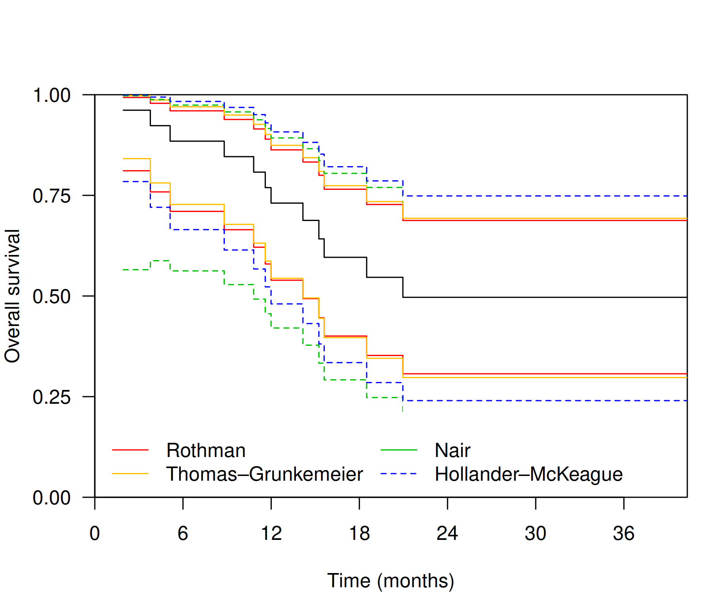

This package re-implements selected pointwise confidence intervals and simultaneous confidence bands for Kaplan-Meier survival estimates from the the km.ci package and from the work of Sachs, Brand, and Gabriel for improved performance. Differences compared to km.ci include:
Nair confidence bands allows arbitrary confidence levels rather than being restricted to pre-computed tables of critical values.
Thomas–Grunkemeier confidence intervals maintain numerical stability at extremely small values that may arise during the construction of Hollander–McKeague confidence bands.
‘WH’ code is designed to maximise speed, for use in simulation studies. As such, input validation is minimal and the user is responsible for ensuring valid use.
Installation
You can install the development version of WHKMconf from GitHub with:
remotes::install_github("hongconsulting/WHKMconf")Example
library(survival)
library(WHKMconf)
data <- data.frame("time" = survival::ovarian$futime, "status" = survival::ovarian$fustat)
fit <- survival::survfit(survival::Surv(time * 12 / 365.2425, status) ~ 1, data = data)
s <- summary(fit)
CI <- data.frame("time" = s$time, "surv" = s$surv)
CI.R <- data.frame(WH_Rothman(s$surv, s$n.risk, s$n.event))
CI <- cbind(CI, setNames(CI.R, c("Rl", "Ru")))
CI.TG <- data.frame(WH_ThomasGrunkemeier(s$time, s$n.risk, s$n.event))
CI <- cbind(CI, setNames(CI.TG, c("TGl", "TGu")))
CI.N <- data.frame(WH_Nair(s$time, s$surv, s$std.err, s$n.risk, s$n.event))
CI <- cbind(CI, setNames(CI.N, c("Nl", "Nu")))
CI.HM <- data.frame(WH_HollanderMcKeague(s$time, s$n.risk, s$n.event))
CI <- cbind(CI, setNames(CI.HM, c("HMl", "HMu")))
t_max <- max(data$time * 12/365.2425)
t_eventmax <- max(data$time[data$status==1] * 12/365.2425)
if (max(CI$time) < t_max) {
CI <- rbind(CI, tail(CI, 1))
CI$time[nrow(CI)] <- t_max
}
par(cex = 1, las = 1, mar = c(4, 4, 1, 1))
plot(x = CI$time, y = CI$surv, type = "s", xaxs = "i", yaxs = "i", xaxt = "n", yaxt = "n", xlab = "Time (months)", ylab = "Overall survival", xlim = c(0, t_max), ylim = c(0, 1))
axis(1, at = seq(0, t_max, 6))
axis(2, at = seq(0, 1, 0.25))
lines(y = CI$Rl, x = CI$time, type = "s", lty = 1, col = grDevices::rgb(1, 0, 0))
lines(y = CI$Ru, x = CI$time, type = "s", lty = 1, col = grDevices::rgb(1, 0, 0))
lines(y = CI$TGl, x = CI$time, type = "s", lty = 1, col = grDevices::rgb(1, 0.75, 0))
lines(y = CI$TGu, x = CI$time, type = "s", lty = 1, col = grDevices::rgb(1, 0.75, 0))
clip(x1 = 0, y1 = 0, x2 = t_eventmax, y2 = 1)
lines(y = CI$Nl, x = CI$time, type = "s", lty = 2, col = grDevices::rgb(0, 0.75, 0))
lines(y = CI$Nu, x = CI$time, type = "s", lty = 2, col = grDevices::rgb(0, 0.75, 0))
clip(x1 = 0, y1 = 0, x2 = t_max, y2 = 1)
lines(y = CI$HMl, x = CI$time, type = "s", lty = 2, col = grDevices::rgb(0, 0, 1))
lines(y = CI$HMu, x = CI$time, type = "s", lty = 2, col = grDevices::rgb(0, 0, 1))
legend(legend = c("Rothman", "Thomas\u2013Grunkemeier", "Nair", "Hollander\u2013McKeague"),
col = c(grDevices::rgb(1, 0, 0), grDevices::rgb(1, 0.75, 0),
grDevices::rgb(0, 0.75, 0), grDevices::rgb(0, 0, 1)),
bty = "n", lty = c(1, 1, 2, 2), inset = 0, ncol = 2,
x = 0, y = 0, yjust = 0, xpd = TRUE)
Further Reading
- Borokov, A.A. and Sycheva, N.M., 1968. On asymptotically optimal non-parametric criteria. Theory of Probability & Its Applications, 13(3), pp. 359–393.
- Hall, W.J. and Wellner, J.A., 1980. Confidence bands for a survival curve from censored data. Biometrika, 67(1), pp. 133–143.
- Hollander, M. and McKeague, I.W., 1997. Likelihood ratio-based confidence bands for survival functions. Journal of the American Statistical Association, 92(437), pp. 215–226.
- Klein, J.P. and Moeschberger, M.L., 2003. Appendix C: Statistical Tables. In Survival Analysis: Techniques for Censored and Truncated Data, pp. 455–482. New York: Springer New York.
- Nair, V.N., 1984. Confidence bands for survival functions with censored data: a comparative study. Technometrics, 26, pp. 265–275.
- Rothman, K.J., 1978. Estimation of confidence limits for the cumulative probability of survival in life table analysis. Journal of Chronic Diseases, 31(8), pp. 557–560.
- Sachs, M.C., Brand, A. and Gabriel, E.E., 2022. Confidence bands in survival analysis. British Journal of Cancer, 127(9), pp. 1636–1641.
- Thomas, D.R. and Grunkemeier, G.L., 1975. Confidence interval estimation of survival probabilities for censored data. Journal of the American Statistical Association, 70(352), pp. 865–871.